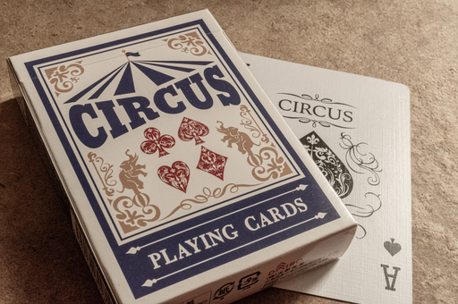
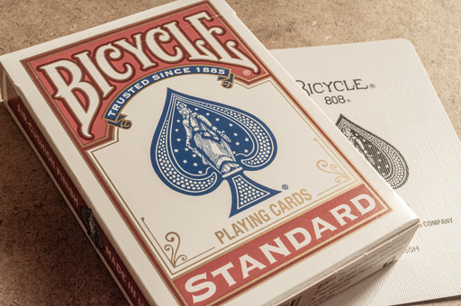
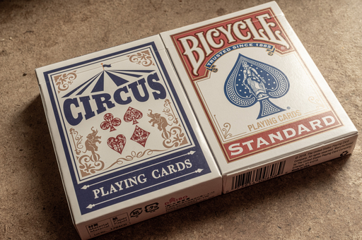
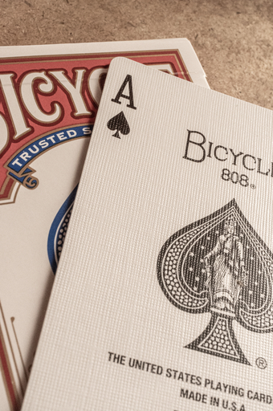
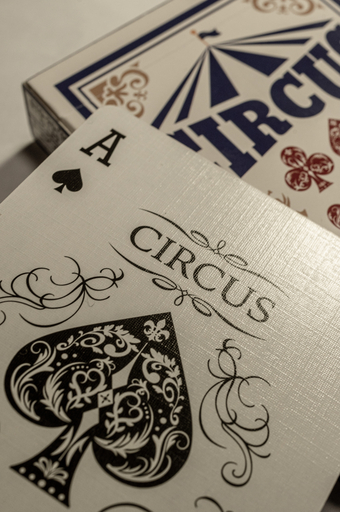
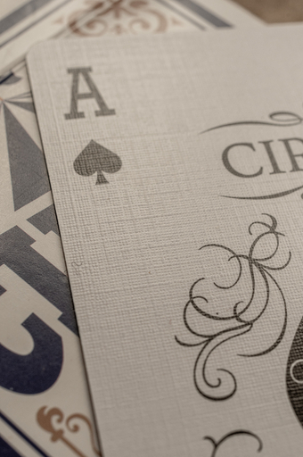
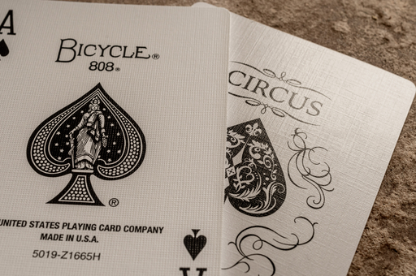
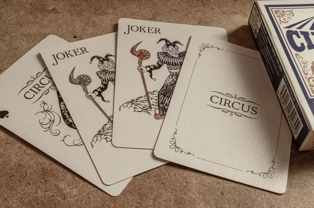

先日ダイソーで紙製のトランプを購入した。紙のケースに CIRCUS PLAYING CARDS とある。
ぱっとみた感じでは U.S プレイング・カード社 Bicycle ブランドのカードに雰囲気が似ている。
並べてみたら U.S プレイング・カード社の OEM ブランドと言っても信じてしまいそうな仕上がりだ。
Bicycle ブランドのカードにはエアクッション・フィニッシュといって、カードの滑りをよくするためのエンボス加工がされている。画像のカード表面に見える格子状の凹凸がそうだ。
実はダイソーの CIRCUS PLAY CARDS にもエアクッション・フィニッシュのようなエンボス加工が加えられている。
もう少し拡大してみたのが下の画像だ。
Bicycle のカードと並べてみると若干エンボスの形状などが異なることがわかる。
手触りは Bicycle のカードに近い感じで昔の雑誌の付録によくついていたようなつるっつるのカードと比べるとカードを重ねても摩擦で滑りにくいということもなく、すべすべしている。
ジョーカーは色付きのものとモノクロのものと合計 2 枚同梱されており、もう 1 枚、CIRCUS と書かれたカードもある。
こんなカードを 110 円で売られたら他のカードブランドはたまったもんじゃないだろうな。